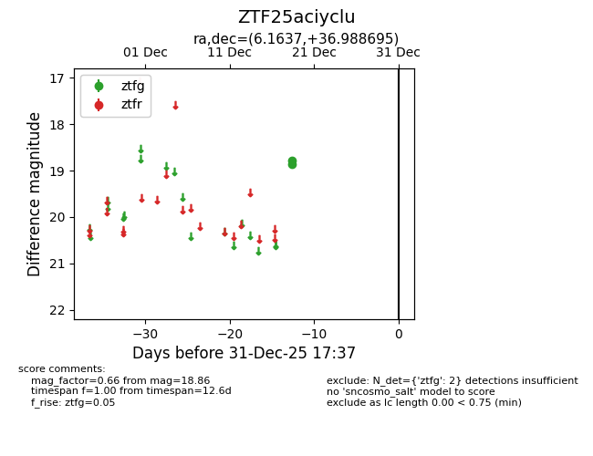
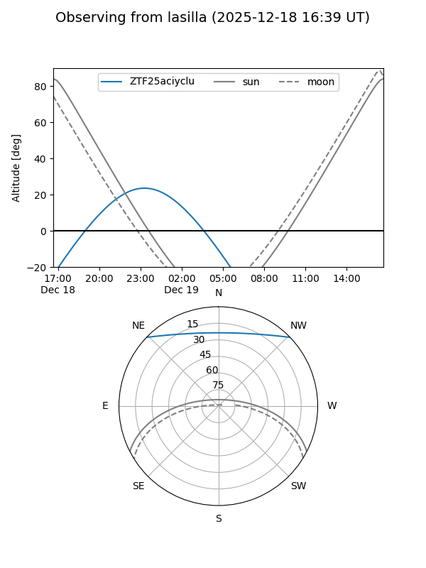
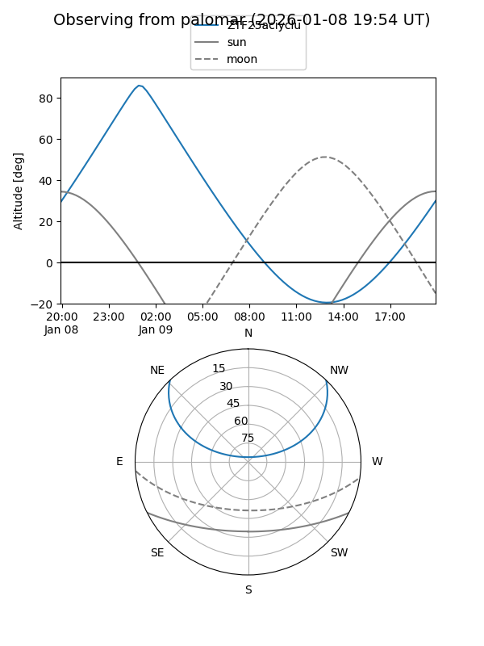

ZTF25aciyclu
Target ZTF25aciyclu at 2025-12-19 05:04
Aliases and brokers:
FINK: fink-portal.org/ZTF25aciyclu
Lasair: lasair-ztf.lsst.ac.uk/objects/ZTF25aciyclu
ALeRCE: alerce.online/object/ZTF25aciyclu
alt names
ZTF25aciyclu (ztf,fink_ztf)
Coordinates:
equatorial (ra, dec) = 6.1637,+36.98870
equatorial (HMS+DMS) = 00:24:39.30,+36:59:19.30
galactic (l, b) = (117.0057,-25.57467)
Flags:
Photometry:
last ztfg=18.86
1 ztfg detections
Lightcurve

Visibility


Additional plots